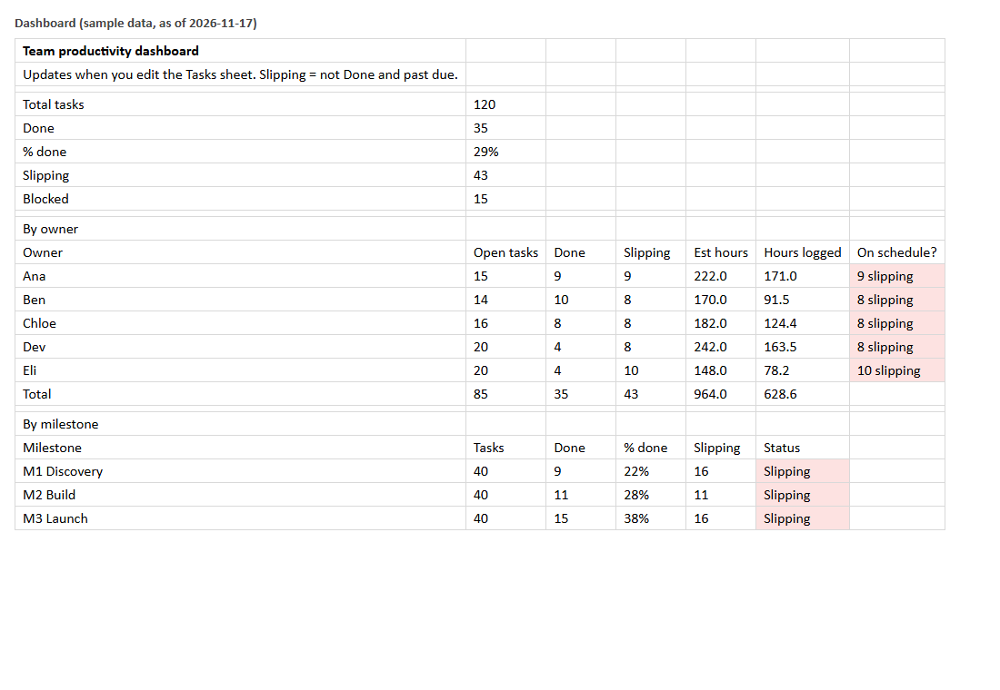

Sample: a team productivity dashboard from a plain task sheet
This is a sample built on dummy data (120 tasks, 5 people, 3 milestones) to show the kind of dashboard we build for a client file. It answers three questions on one page: who is on schedule, which milestones are slipping, and where the hours go.

How it works
- Input: one Tasks sheet with the columns a team already keeps: task, owner, milestone, status, start, due, estimated hours, hours logged.
- Rule: a task is slipping when it is not Done and its due date is before today. Slipping rows turn red.
- Dashboard: totals, a row per owner (open, done, slipping, estimated vs logged hours, on schedule or not) and a row per milestone (% done, slipping count, status), plus a chart of hours by owner.
- Upkeep: it recalculates as you edit. Plain COUNTIFS/SUMIFS formulas, no macros and no add-ins, so it opens in Excel and imports into Google Sheets.
For a client job
- Your column names and your owner and milestone lists.
- A one-page guide so anyone on your team can drop in the next file.
- A test record with every delivery: formula errors = 0 and totals checked against a separate count.
Sample only: names and numbers are invented. The figures in the picture are as of 17 Nov 2026.